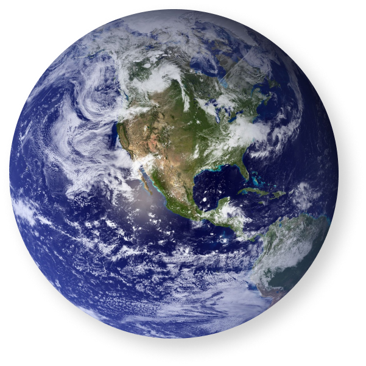

home > 박물관소개 > 인사말
인사말
SEODAMUN MUSEUM OF NATURAL HISTORY
-

- 지구의 역사가 46억년이라는 점을 감안할때 고작 20만 년 전에 출현한 우리 인류의 역사는 매우 짧습니다.
- 그럼에도 우리는 무한한 호기심으로 자연의 역사, 즉 자연사(natural history)를 연구해왔습니다. 이러한 과거에 대한 발견은 미래를 모델링하고 예측하는 데 도움이 됩니다. 자연 세계에 대한 이해를 증진시키고, 자연보존에서 공중 보건, 기후 변화, 식량 확보 및 신약개발에 이르기까지 우리 시대의 중요한 문제들을 해결할 수 있는 단서가 됩니다.
-
- 표본을 통해서 지구의 역사를 알아가고 있습니다
- 이를 위해 자연사박물관에서는 시간적 및 공간적 순간들을 반영하는 표본을 수집하여 보존하고 있습니다. 그리고 이 순간에도 우리는 천문학, 지질학, 고생물학, 동물학, 식물학, 인류학 등 지구가 품고 있는 모든 것의 이야기로 부터 새롭고 중요한 정보를 계속 모아 연구를 하고, 이를 바탕으로 전시와 교육을 하고 있습니다.
-
- 최초의 공립 자연사 박물관 입니다
- 전 세계에는 수많은 국‧공립 및 사립 자연사박물관들이 있습니다. 그러나 우리나라에 아직 국립자연사박물관이 없는 상황에서 서대문자연사박물관은 2003년 개관한 우리나라 최초의 공립 자연사박물관입니다. 개관이후 지난 17년 동안 우리 서대문자연사박물관은 지속적으로 표본을 수집하여 45,000 여 점을 소장하고 있습니다.
-
- 세계로 뻗어나가는 서대문 자연사 박물관
- 이제 우리는 한층 더 도약해야 할 과제를 가지고 있습니다. 이를 위해 해외 유관기관들과 연결하여 국제적으로 서대문자연사박물관을 알리는 동시에 해외표본을 수집하고자 합니다. 교육면에서는 참가자들이 주체가 될 수 있는 자연사 및 과학 프로그램을 개발하여 소통의 장을 넓히고자 합니다. 또한 방문하기 어려운 상황에서도 자연사박물관을 관람할 수 있는 비대면 교육프로그램을 개발하고, 전시 면에서는 4차 혁명 기술을 접목시키는 방안을 찾고자 합니다.